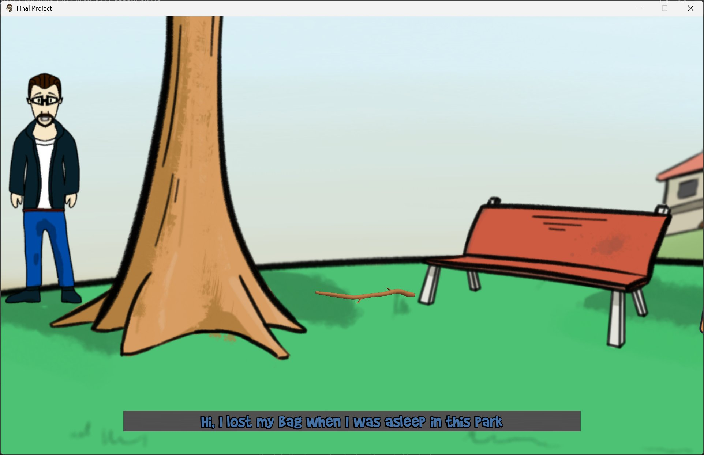
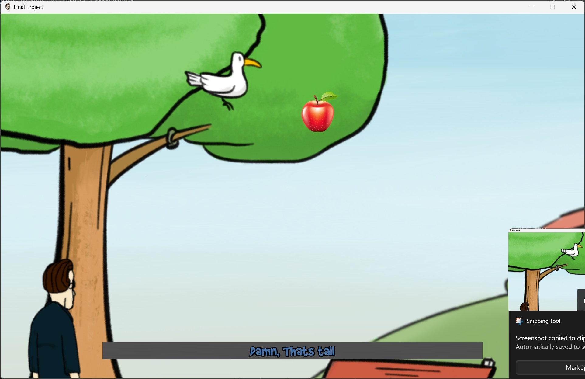
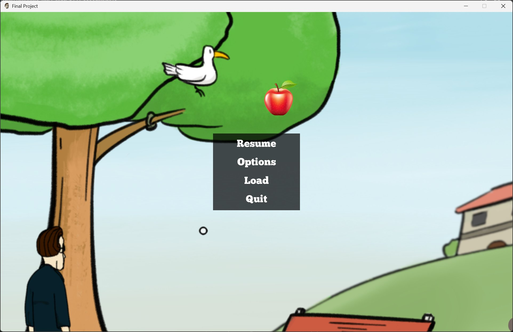
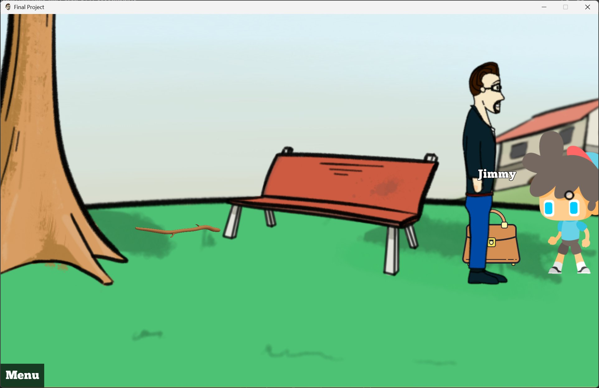

A hand-illustrated point-and-click adventure built in Unity using Adventure Creator. A man wakes up in a park, has lost his bag, and meets a familiar small boy named Jimmy. Multiple scenes, puzzle design, hover-to-identify hotspots, dialogue, pause menu, save and load. Shares its protagonist (Jimmy) with my MA platformer.
A complete hand-illustrated point-and-click adventure. The opening: a man stands in a park near a tree and a red bench. "Hi, I lost my Bag when I was asleep in this Park." The player has to help him recover it. Along the way the player meets Jimmy, the same small character from SideScroller, who plays a role in the resolution.


This is not a single scene or a vertical slice. Final Project ships with:

Final Project is deliberately hand-illustrated, sketchy outlines, flat coloring, comic-strip framing. The character's facial expressions change frame by frame across scenes. This is the opposite aesthetic of SideScroller's glossy 3D-rendered look. Both games are by me. Both contain Jimmy. The art directions diverge because the games are different formats, and committing to two distinct visual styles cleanly across one body of work is, I think, the most interesting design fact about these two pieces.

Same disclosure as SideScroller: